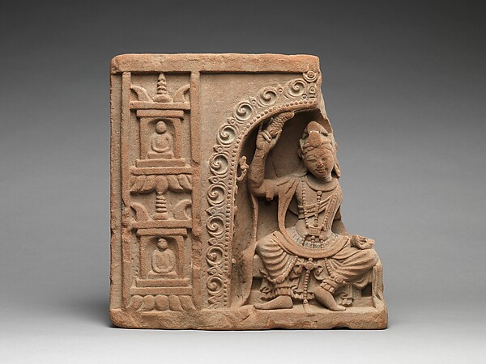
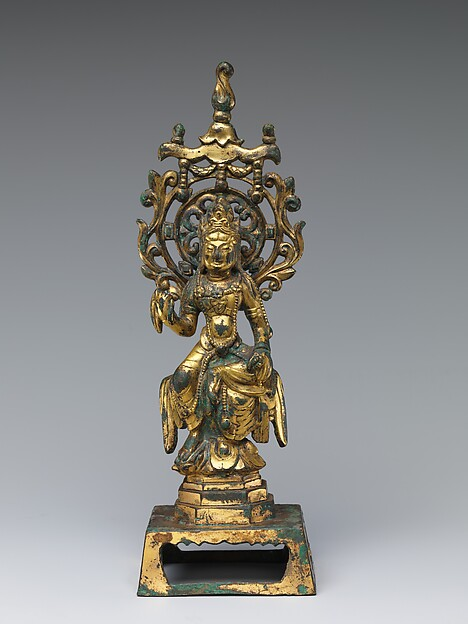

仏陀という人
神格化の前に、一人の探究者として見る。
HOME
2500年前、一人の人間がこの問いを追い続けた。

神格化の前に、一人の探究者として見る。
四諦・八正道・縁起・無常・無我をつなげて理解する。
教えがどう広がり、変化したかを時間軸で追う。
WHY BUDDHA NOW
仏陀の教えは、世界の起源を説明することよりも、目の前の苦しみがどう成立し、どう弱まり得るかを扱います。仕事、人間関係、老い、不安、失敗への恐れ。形は変わっても、期待したものが変化し、思い通りにならないときに起こる反応は、2500年前と大きく変わりません。
このサイトでは「ありがたい言葉」を並べるのではなく、四諦・八正道・縁起・無常・無我がどう連動しているかを、歴史的背景とともに読みます。最初に結論を信じる必要はありません。観察し、比較し、自分の経験に照らして考えることから始めます。
入口として：SN 56.11（初転法輪）
START HERE
仏教の「苦」は単なる不幸ではなく、変化するものへ依存する不安定さまで含む広い概念です。
欲望を悪として断罪するのではなく、条件によって生まれる反応として観察します。
八正道は思想ではなく、理解・言葉・行為・生活・努力・注意・集中を整える実践の枠組みです。
VISUAL ARCHIVE


DEEP READING
仏教でいう苦（dukkha）は、痛みや悲しみだけを指す言葉ではありません。楽しい経験でさえ変化し、思い通りに固定できない。その不安定さまで含めて、人間の経験を観察するための言葉です。仏陀の教えは「人生はすべて不幸だ」と宣言する悲観論ではなく、満足が崩れる仕組みを見つけ、そこへの関わり方を変えられるかを問います。
このサイトでは、苦を四諦・縁起・無常・無我とつなげて読みます。単独の名言として切り取らず、どの教えがどの問題に答えているのかを見失わないことが出発点です。
歴史上のゴータマ・ブッダは、宇宙の創造者を説明する体系を築こうとしたというより、老い・病・死、欲望、怒り、恐れ、執着といった経験に対して、苦がどう成立し、どう弱まるのかを探究しました。初期経典では、理解だけでなく、倫理・注意・集中を含む実践が繰り返し説かれています。
そのため、このサイトでも思想史だけで終わらせません。「知識として正しいか」と同時に、「自分の経験をどう観察するための教えなのか」を分けて示します。
現在「仏教」と呼ばれるものには、初期仏教、部派仏教、大乗仏教、密教、中国仏教、日本仏教など、長い歴史の中で生まれた多様な層があります。般若心経、浄土思想、禅、密教などを、すべて歴史上の釈迦が同じ言葉で直接説いたと扱うのは正確ではありません。
本サイトでは、時代・地域・文献層をなるべく明示し、「釈迦に近い層の教え」「後世に発展した思想」「日本での展開」を区別します。違いを知ることは、どれかを否定することではなく、それぞれを正確に理解するためです。
FURTHER READING
初めてなら「仏陀とは」→「生涯」→「教え」→「四諦」の順がおすすめです。人物像を知ってから教えの骨格へ進むと、用語が単なる暗記になりにくくなります。悩みから入りたい人は「怒り・不安・執着」から逆引きし、そこで出てきた無常・縁起・八正道を辞典や教えのページへ戻って確認できます。
歴史や宗派から入りたい人は「2500年の歴史」→「宗派」→「経典」の順に読むと、初期仏教と大乗・密教・日本仏教の位置関係が見えやすくなります。
仏教は、短い名言だけを集めても全体像が見えません。「執着を手放せ」「今を生きよ」といった表現は分かりやすい反面、何をどう観察し、どんな条件で苦が弱まるのかという構造が抜け落ちます。
このサイトでは、教えを生活に当てはめるときも、原典・思想史・現代的解釈の三つを分けます。響きのよい言葉より、再現可能な理解を優先します。
DEEP DIVE
2500年前の問いを、いま自分の問いとして読む。